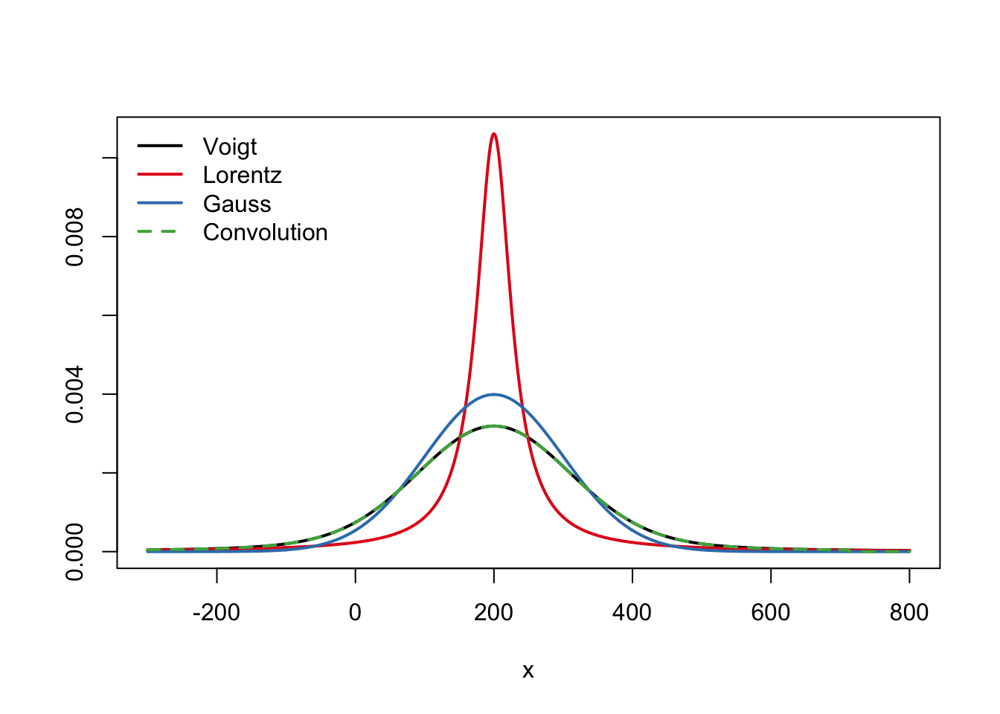
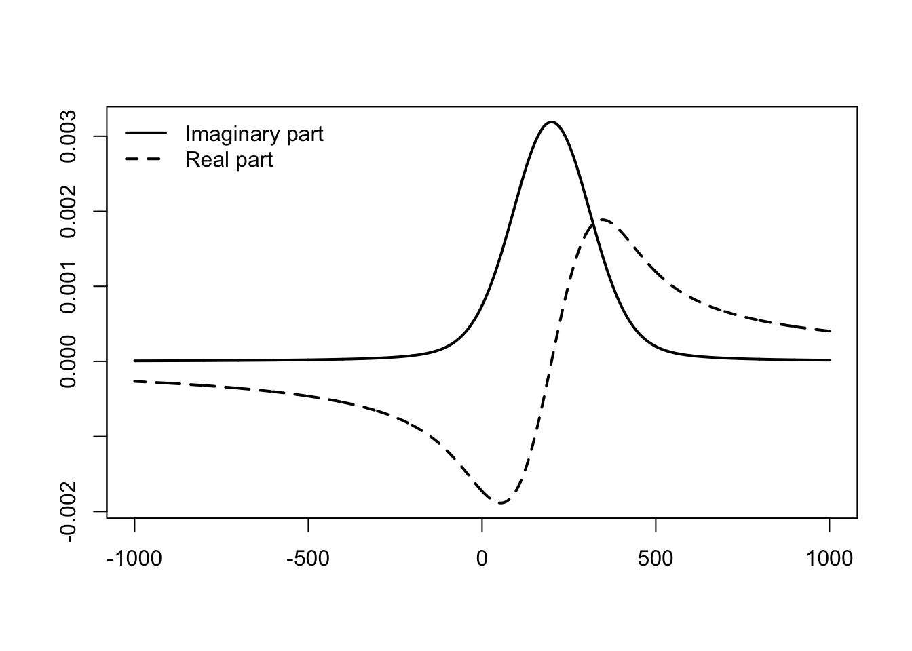

The Voigt lineshape is important in many fields of spectroscopy, yet the direct approach of numerical convolution between a Lorentzian and a Gaussian can be too slow. With the RcppFaddeeva package we leverage in R the elegant c++ routines provided by Steve G. Johnson for the calculation of the closely related Faddeeva function, with seamless bindings provided by Rcpp.
Faddeeva_w
In this example we compare the Gaussian, Lorentzian, and Voigt lineshapes for a peak centred at 200.
palette(c(c("#000000", "#E41A1C", "#377EB8", "#4DAF4A", "#984EA3", "#FF7F00"), palette()))
library(RcppFaddeeva)
x <- seq(-300, 800)
x0 <- 200
l <- Lorentz(x, x0, 30)
g <- Gauss(x, x0, 100)
## brute-force convolution
# (discrete convolve() would perform better but indexing is tricky)
lg <- function(x) {
integrate(function(t) Lorentz(t, 0, 30) * Gauss(x-t, x0, 100),
-Inf, Inf, rel.tol = 1e-6)$value
}
c <- sapply(x, lg)
v <- Voigt(x, x0, 100, 30)
matplot(x, cbind(v, l, g, c), t="l", lty=c(1,1,1,2), xlab="x", ylab="", lwd = 2)
legend("topleft", legend = c("Voigt", "Lorentz", "Gauss", "Convolution"), bty="n",
lty=c(1,1,1,2), col=1:4, lwd=2)
We also check that the prefactors are correct; the three distributions should integrate to unity (note that if x0 is too far from the origin and/or the distribution is too narrow, integrate() may fail to sample the center of mass and give an erroneous answer).
integrate(Lorentz, -Inf, Inf, x0=200, gamma=100)## 1 with absolute error < 1.2e-06integrate(Gauss, -Inf, Inf, x0=200, sigma=50)## 1 with absolute error < 6.4e-06integrate(Voigt, -Inf, Inf, x0=200, sigma=50, gamma=100)## 1 with absolute error < 7.6e-09An interesting side-effect of obtaining the Voigt lineshape via the imaginary part of the complex Faddeeva function is the direct access to its harmonic conjugate in the real part. This can be useful in modelling optical response functions connected by a Hilbert transform.
x <- seq(-1000, 1000)
x0 <- 200
v <- Voigt(x, x0, 100, 30, real = FALSE)
matplot(x, cbind(Re(v), Im(v)), t="l", lty=c(1,2), xlab="", ylab="", col=1, lwd = 2)
legend("topleft", legend = c("Imaginary part", "Real part"), bty="n",
lty=c(1,2), col=1, lwd = 2)